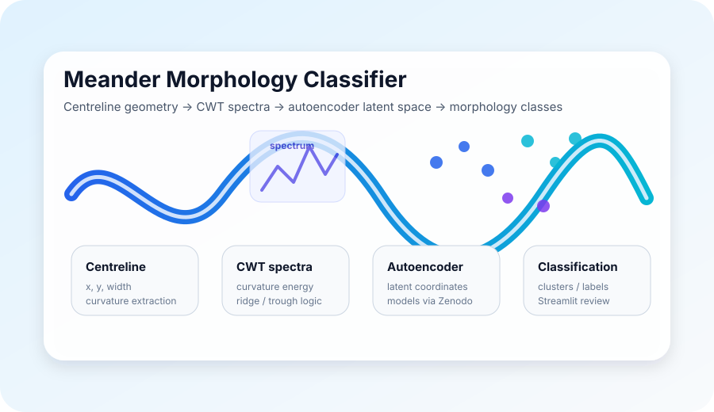

Live demo
This project has a one-click Streamlit demo using public-safe synthetic or example data: Launch demo.
Problem
River meander planforms contain information about bend asymmetry, compound-bend structure and morphodynamic behaviour. Classification workflows need to connect centreline geometry, curvature spectra, machine-learning representations and reproducible outputs.
Approach
- Extract inflection-bounded single bends and compound/complex meander units from centreline data.
- Represent curvature structure using continuous wavelet-transform spectra.
- Use autoencoder latent spaces and clustering to support morphology classification.
- Provide command-line workflows and a Streamlit GUI for repeatable analysis and inspection.
What it demonstrates
This project shows scientific machine learning in a research-software setting: spectral features, autoencoder-based representation learning, latent-space interpretation, Streamlit tooling, a peer-reviewed methodology, documentation and reproducible workflows.
Publication
The classification framework behind this toolkit is described in a peer-reviewed paper:
Lopez Dubon, S., Sgarabotto, A., & Lanzoni, S. (2025). A Curvature-Based Framework for Automated Classification of Meander Bends. Water Resources Research, 61(2), e2024WR037583.
cd meander-morphology-classifier
python -m pip install -e ".[dev]"
pytest
streamlit run app/streamlit_app.py